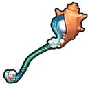

Madrepérola
Cajado · Tier 14 · Nível 42
A pérola é incrivelmente rara, mas igualmente habilidosa em canalizar poderosos feitiços de água.
Atributos
Ataque
1.160
Defesa
290
Economia
Valor
12.300.000
Tempo de fabricação
2d 7h
XP do comerciante
335.000
Trabalhadores: Carpinteiro 36, Feiticeiro 32, Sacerdotisa 29
Receita


Marcos do projeto
4
Tempo de fabricação -20%
10
-2 Essência
18
Valor +25%
30
-1 Pluma de Semideus
45
Chance de qualidade +1